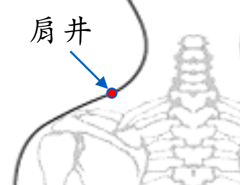

【穴位名稱】: 肩井 (GB21)

【治療症狀】: 高血壓 胎衣不下 乳炎、乳癱 肩膀痠痛 肩痛不舉 落枕 頸痛 手脹_手麻 坐骨神經痛
【取穴位置】: 肩上，前直乳中，當大椎與肩峰端連線的中點處。《針灸甲乙經》：「在肩上陷者中，缺盆上，大骨前」；大骨，指肩胛岡，穴在肩胛骨上角與斜方肌上緣之間。《太平聖惠方》：「在肩上陷罅中，缺盆上，大骨前一寸半，以三指按之，當其中指下陷者中是也。」《針灸玉龍經》：「在肩端上缺盆盡處」；《針方六集》：「如取左[側]穴，用本人右手小指按於左肩柱骨尖上，平排三指，取中指下第一節中是穴。取右[側]穴，亦如是。」可作定位參考。
【針刺方法】: 直刺或斜向後方斜刺0.5～0.8吋，不宜向前內下方直刺，以免穿透第1肋間隙或其上方而損傷深層的肺臟。艾炷灸3～5壯。艾條溫灸10～15分鐘。